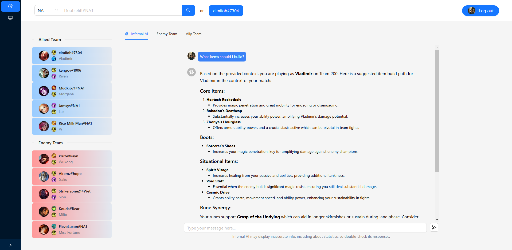
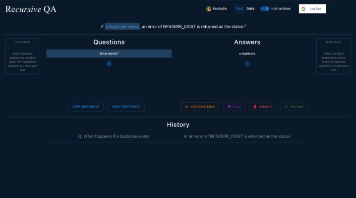
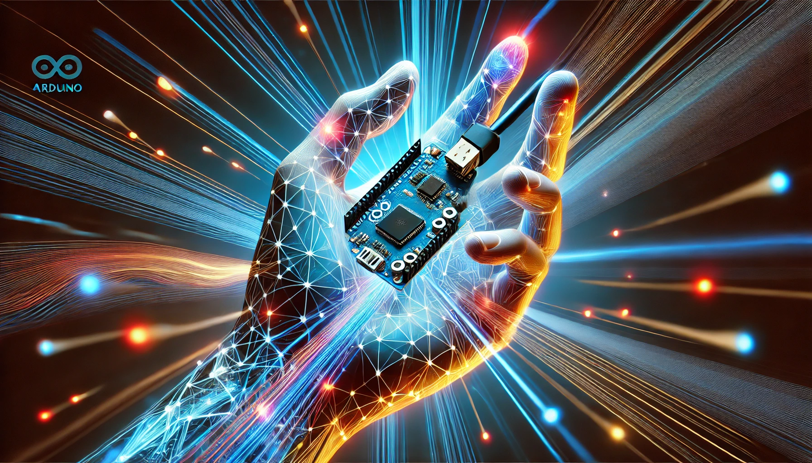
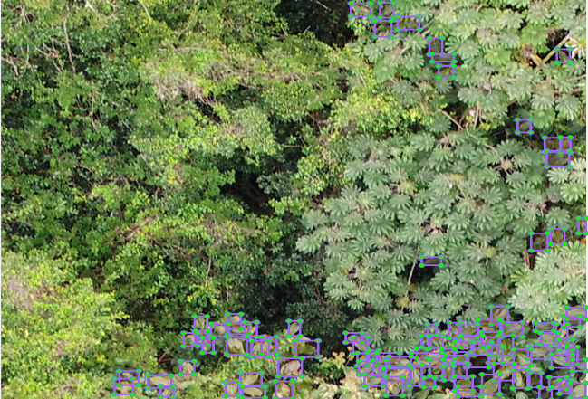
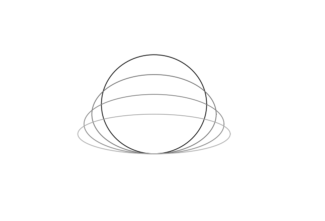

gonext.lol
An AI-powered analytics tool for League of Legends that provides real-time, personalized strategies, matchups, synergies, and builds. Utilizing the Riot API, it gathers live game data, including insights on both allied and enemy players. This information is then processed by advanced language models to deliver tailored, game-specific, and personalized guidance to players.

Recursive QA
Github
NLP annotation framework that replaces traditional labeling methods with a question-answering approach. By leveraging the constituency parse tree of a sentence, it guides the annotator through selecting from generated question-answer pairs. The system also integrates features like visualizations, user management, and history tracking to streamline annotation quality control.

I Want to Redistrict
A political science tool designed to create and analyze state districting plans using statistical measures. Its primary goal is to expose gerrymandering and generate fair districting plans under human oversight, leveraging data from the 2020 Census. The application is powered by Stony Brook University's powerful SeaWulf supercomputer.

Deep Gestures
Github
A complete pipeline from data collection and preparation to model training, optimization, and deployment, designed to implement an optimized gesture recognition CNN on an Arduino Nano 33 BLE Sense microcontroller, utilizing its 3-axis accelerometer.

Symbiotic Learning
A human-in-the-loop image annotation tool designed to detect and classify invasive species in aerial drone images, playing a vital role in preserving Hawaii's ecosystems. As the tool's accuracy improves during real-time training, it progressively provides more suggestions to assist the annotator.

EMF in Ellipses
PDF
A study of the motional EMF induced in elliptical conducting loops traversed by a magnetic field.
P-M Binder, Kostadin G Devedzhiev, Alexandra T Runyan. (2020). Motional emf generated by squeezing an elliptical conducting loop.
European Journal of Physics, European Physical Society. https://doi.org/1361-6404/ABB066


{kind=link}
{kind=link}
{kind=link}
{kind=link}
{kind=link}